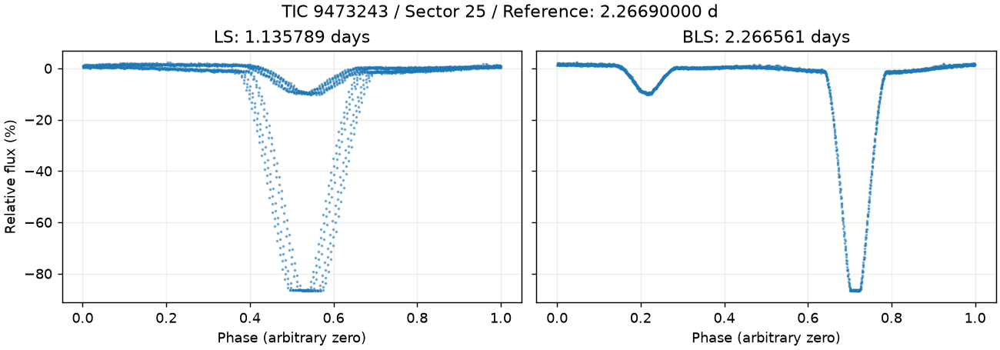
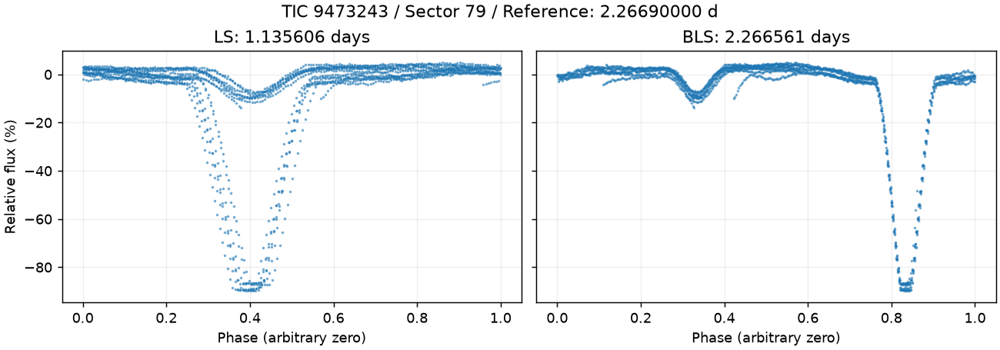
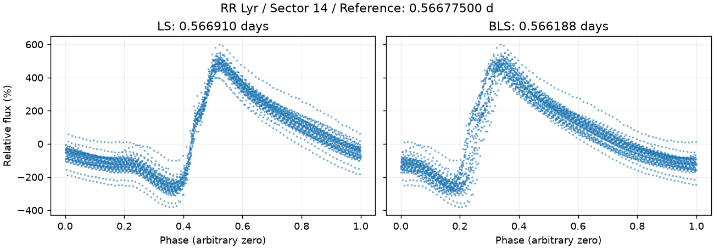
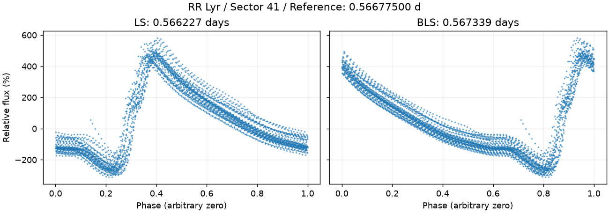
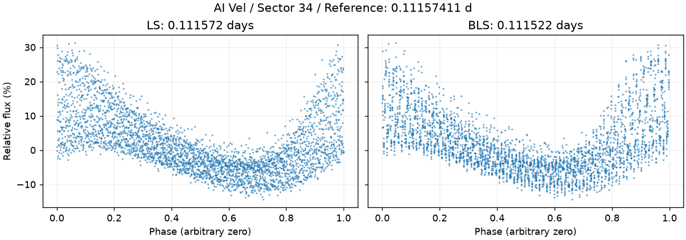
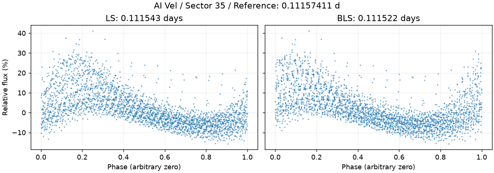

TIC 9473243 · Sector 25

左右图使用同一份观测，按两种算法各自算出的周期折叠。相位零点任意，纵轴是相对通量。
目录给出的周期相当于参考答案。先固定目标和参数，让程序只看观测数据，计算完成后才对答案。本次用 1% 的相对差作为比较容差；半周期和双周期算作错误。
| 对象 | 观测区 | 参考周期（天） | LS 结果（天） | BLS 结果（天） |
|---|---|---|---|---|
| TIC 9473243 | 25 | 2.26690000 | 1.13578937 误判为半周期 | 2.26656143 参考周期附近 |
| TIC 9473243 | 79 | 2.26690000 | 1.13560605 误判为半周期 | 2.26656143 参考周期附近 |
| RR Lyr | 14 | 0.56677500 | 0.56690980 参考周期附近 | 0.56618838 参考周期附近 |
| RR Lyr | 41 | 0.56677500 | 0.56622695 参考周期附近 | 0.56733941 参考周期附近 |
| AI Vel | 34 | 0.11157411 | 0.11157154 参考周期附近 | 0.11152194 参考周期附近 |
| AI Vel | 35 | 0.11157411 | 0.11154340 参考周期附近 | 0.11152194 参考周期附近 |
食双星每圈可能发生两次亮度下降，LS 容易把间隔当成完整周期。BLS 会寻找反复出现的亮度下降，但也可能遇到半周期、倍周期或其他错误；本例不能证明它总是更准。
仍缺更多类型、幅度的目标，以及噪声和稳定星对照。这里只测试周期恢复，未验证自动分类、信号来源或新发现资格。RR Lyr 的 TIC 星等字段存在冲突，具体身份核对与局限见上一层 README。

左右图使用同一份观测，按两种算法各自算出的周期折叠。相位零点任意，纵轴是相对通量。

左右图使用同一份观测，按两种算法各自算出的周期折叠。相位零点任意，纵轴是相对通量。

左右图使用同一份观测，按两种算法各自算出的周期折叠。相位零点任意，纵轴是相对通量。

左右图使用同一份观测，按两种算法各自算出的周期折叠。相位零点任意，纵轴是相对通量。

左右图使用同一份观测，按两种算法各自算出的周期折叠。相位零点任意，纵轴是相对通量。

左右图使用同一份观测，按两种算法各自算出的周期折叠。相位零点任意，纵轴是相对通量。